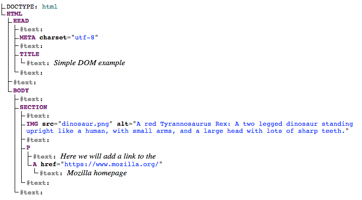
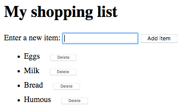

When writing web pages and apps, one of the most common things you'll want to do is manipulate the document structure in some way. This is usually done by using the Document Object Model (DOM), a set of APIs for controlling HTML and styling information that makes heavy use of the {{domxref("Document")}} object. In this article we'll look at how to use the DOM in detail, along with some other interesting APIs that can alter your environment in interesting ways.
| Prerequisites: | Basic computer literacy, a basic understanding of HTML, CSS, and JavaScript — including JavaScript objects. |
|---|---|
| Objective: | To gain familiarity with the core DOM APIs, and the other APIs commonly associated with DOM and document manipulation |
Web browsers are very complicated pieces of software with a lot of moving parts, many of which can't be controlled or manipulated by a web developer using JavaScript. You might think that such limitations are a bad thing, but browsers are locked down for good reasons, mostly centering around security. Imagine if a web site could get access to your stored passwords or other sensitive information, and log into websites as if it were you?
Despite the limitations, Web APIs still give us access to a lot of functionality that enable us to do a great many things with web pages. There are a few really obvious bits you'll reference regularly in your code — consider the following diagram, which represents the main parts of a browser directly involved in viewing web pages:
In this article we'll focus mostly on manipulating the document, but we'll show a few other useful bits besides.
The document currently loaded in each one of your browser tabs is represented by a document object model. This is a "tree structure" representation created by the browser that enables the HTML structure to be easily accessed by programming languages — for example the browser itself uses it to apply styling and other information to the correct elements as it renders a page, and developers like you can manipulate the DOM with JavaScript after the page has been rendered.
We have created a simple example page at dom-example.html (see it live also). Try opening this up in your browser — it is a very simple page containing a {{htmlelement("section")}} element inside which you can find an image, and a paragraph with a link inside. The HTML source code looks like this:
<!DOCTYPE html>
<html>
<head>
<meta charset="utf-8">
<title>Simple DOM example</title>
</head>
<body>
<section>
<img src="dinosaur.png" alt="A red Tyrannosaurus Rex: A two legged dinosaur standing upright like a human, with small arms, and a large head with lots of sharp teeth.">
<p>Here we will add a link to the <a href="https://www.mozilla.org/">Mozilla homepage</a></p>
</section>
</body>
</html>
The DOM on the other hand looks like this:

Note: This DOM tree diagram was created using Ian Hickson's Live DOM viewer.
You can see here that each element and bit of text in the document has its own entry in the tree — each one is called a node. You will also encounter various terms used to describe the type of node, and their position in the tree in relation to one another:
HTML node (other markup vocabularies like SVG and custom XML will have different root elements).IMG is a child of SECTION in the above example.IMG is a child of SECTION in the above example, and it is also a descendant. IMG is not a child of BODY, as it is two levels below it in the tree, but it is a descendant of BODY.BODY is the parent node of SECTION in the above example.IMG and P are siblings in the above example.It is useful to familiarize yourself with this terminology before working with the DOM, as a number of the code terms you'll come across make use of them. You may have also come across them if you have studied CSS (e.g. descendant selector, child selector).
To start learning about DOM manipulation, let's begin with a practical example.
<script></script> element just above the closing </body> tag.const link = document.querySelector('a');
link.textContent = 'Mozilla Developer Network';
link.href = 'https://developer.mozilla.org';
Note that, as with many things in JavaScript, there are many ways to select an element and store a reference to it in a variable. {{domxref("Document.querySelector()")}} is the recommended modern approach, which is convenient because it allows you to select elements using CSS selectors. The above querySelector() call will match the first {{htmlelement("a")}} element that appears in the document. If you wanted to match and do things to multiple elements, you could use {{domxref("Document.querySelectorAll()")}}, which matches every element in the document that matches the selector, and stores references to them in an array-like object called a {{domxref("NodeList")}}.
There are older methods available for grabbing element references, such as:
id attribute value, e.g. <p id="myId">My paragraph</p>. The ID is passed to the function as a parameter, i.e. const elementRef = document.getElementById('myId').<p>s, <a>s, etc. The element type is passed to the function as a parameter, i.e. const elementRefArray = document.getElementsByTagName('p').These two work better in older browsers than the modern methods like querySelector(), but are not as convenient. Have a look and see what others you can find!
The above has given you a little taste of what you can do, but let's go further and look at how we can create new elements.
const sect = document.querySelector('section');
const para = document.createElement('p');
para.textContent = 'We hope you enjoyed the ride.';
sect.appendChild(para);
const text = document.createTextNode(' — the premier source for web development knowledge.');
const linkPara = document.querySelector('p');
linkPara.appendChild(text);
That's most of what you need for adding nodes to the DOM — you'll make a lot of use of these methods when building dynamic interfaces (we'll look at some examples later).
There may be times when you want to move nodes, or delete them from the DOM altogether. This is perfectly possible.
If we wanted to move the paragraph with the link inside it to the bottom of the section, we could do this:
sect.appendChild(linkPara);
This moves the paragraph down to the bottom of the section. You might have thought it would make a second copy of it, but this is not the case — linkPara is a reference to the one and only copy of that paragraph. If you wanted to make a copy and add that as well, you'd need to use {{domxref("Node.cloneNode()")}} instead.
Removing a node is pretty simple as well, at least when you have a reference to the node to be removed and its parent. In our current case, we just use {{domxref("Node.removeChild()")}}, like this:
sect.removeChild(linkPara);
When you want to remove a node based only on a reference to itself, which is fairly common, you can use {{domxref("Element.remove()")}}:
linkPara.remove();
This method is not supported in older browsers. They have no method to tell a node to remove itself, so you'd have to do the following.
linkPara.parentNode.removeChild(linkPara);
Have a go at adding the above lines to your code.
It is possible to manipulate CSS styles via JavaScript in a variety of ways.
To start with, you can get a list of all the stylesheets attached to a document using {{domxref("Document.stylesheets")}}, which returns an array-like object with {{domxref("CSSStyleSheet")}} objects. You can then add/remove styles as wished. However, we're not going to expand on those features because they are a somewhat archaic and difficult way to manipulate style. There are much easier ways.
The first way is to add inline styles directly onto elements you want to dynamically style. This is done with the {{domxref("HTMLElement.style")}} property, which contains inline styling information for each element in the document. You can set properties of this object to directly update element styles.
para.style.color = 'white'; para.style.backgroundColor = 'black'; para.style.padding = '10px'; para.style.width = '250px'; para.style.textAlign = 'center';
<p style="color: white; background-color: black; padding: 10px; width: 250px; text-align: center;">We hope you enjoyed the ride.</p>
Note: Notice how the JavaScript property versions of the CSS styles are written in lower camel case whereas the CSS versions are hyphenated (e.g. backgroundColor versus background-color). Make sure you don't get these mixed up, otherwise it won't work.
There is another common way to dynamically manipulate styles on your document, which we'll look at now.
<style>
.highlight {
color: white;
background-color: black;
padding: 10px;
width: 250px;
text-align: center;
}
</style>
para.setAttribute('class', 'highlight');
Which method you choose is up to you; both have their advantages and disadvantages. The first method takes less setup and is good for simple uses, whereas the second method is more purist (no mixing CSS and JavaScript, no inline styles, which are seen as a bad practice). As you start building larger and more involved apps, you will probably start using the second method more, but it is really up to you.
At this point, we haven't really done anything useful! There is no point using JavaScript to create static content — you might as well just write it into your HTML and not use JavaScript. It is more complex than HTML, and creating your content with JavaScript also has other issues attached to it (such as not being readable by search engines).
In the next couple of sections we will look at a couple of more practical uses of DOM APIs.
Note: You can find our finished version of the dom-example.html demo on GitHub (see it live also).
So far we've only really looked at using {{domxref("Node")}} and {{domxref("Document")}} features to manipulate documents, but there is no reason why you can't get data from other sources and use it in your UI. You just have to make sure your data is in the right format; JavaScript makes it easier than many other languages, being weakly typed — for example numbers will convert to strings automatically when you want to print them to the screen.
In this example we will solve a common problem — making sure your application is as big as the window it is viewed in, whatever size it is. This is often useful in situations like games, where you want to use as much of the screen area as possible to play the game in.
To start with, make a local copy of our window-resize-example.html and bgtile.png demo files. Open it and have a look — you'll see that we've got a {{htmlelement("div")}} element covering a small part of the screen, which has got a background tile applied to it. We'll use that to represent our app UI area.
const div = document.querySelector('div');
let winWidth = window.innerWidth;
let winHeight = window.innerHeight;
div.style.width = winWidth + 'px'; div.style.height = winHeight + 'px';
window.onresize = function() {
winWidth = window.innerWidth;
winHeight = window.innerHeight;
div.style.width = winWidth + 'px';
div.style.height = winHeight + 'px';
}
Note: If you get stuck, have a look at our finished window resize example (see it live also).
To round off the article, we'd like to set you a little challenge — we want to make a simple shopping list example that allows you to dynamically add items to the list using a form input and button. When you add an item to the input and press the button:
The finished demo will look something like this:

To complete the exercise, follow the steps below, and make sure that the list behaves as described above.
''.focus() method to focus the input element ready for entering the next shopping list item.Note: If you get really stuck, have a look at our finished shopping list (see it running live also.)
We have reached the end of our study of document and DOM manipulation. At this point you should understand what the important parts of a web browser are with respect to controlling documents and other aspects of the user's web experience. Most importantly, you should understand what the Document Object Model is, and how to manipulate it to create useful functionality.
There are lots more features you can use to manipulate your documents. Check out some of our references and see what you can discover:
(See our Web API index for the full list of Web APIs documented on MDN!)
{kind=link}
{kind=link}